demo 1, frame 0
Query frame with its latent nearest neighbors, ordered by increasing Euclidean distance.

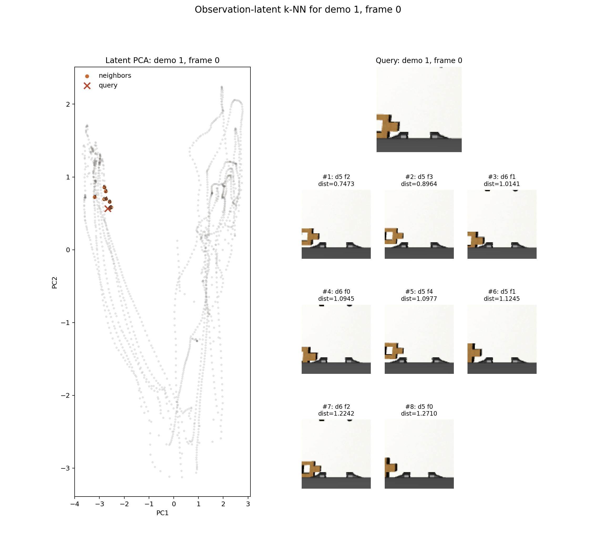
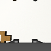

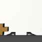
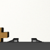
demo 1, frame 40
Query frame with its latent nearest neighbors, ordered by increasing Euclidean distance.

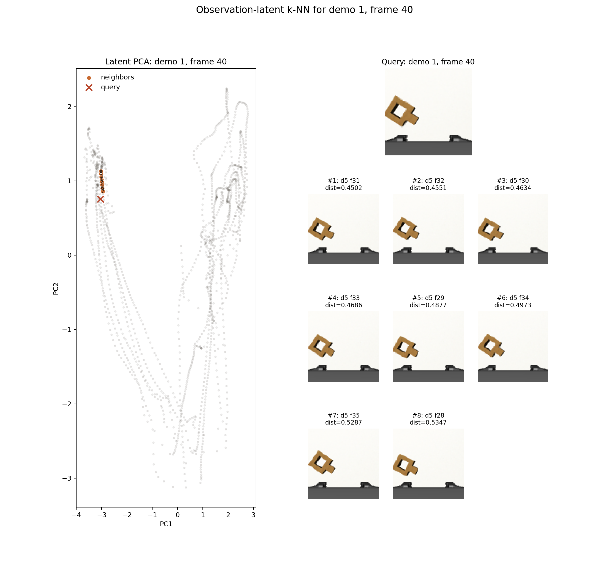
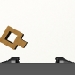
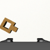
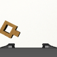
demo 1, frame 80
Query frame with its latent nearest neighbors, ordered by increasing Euclidean distance.
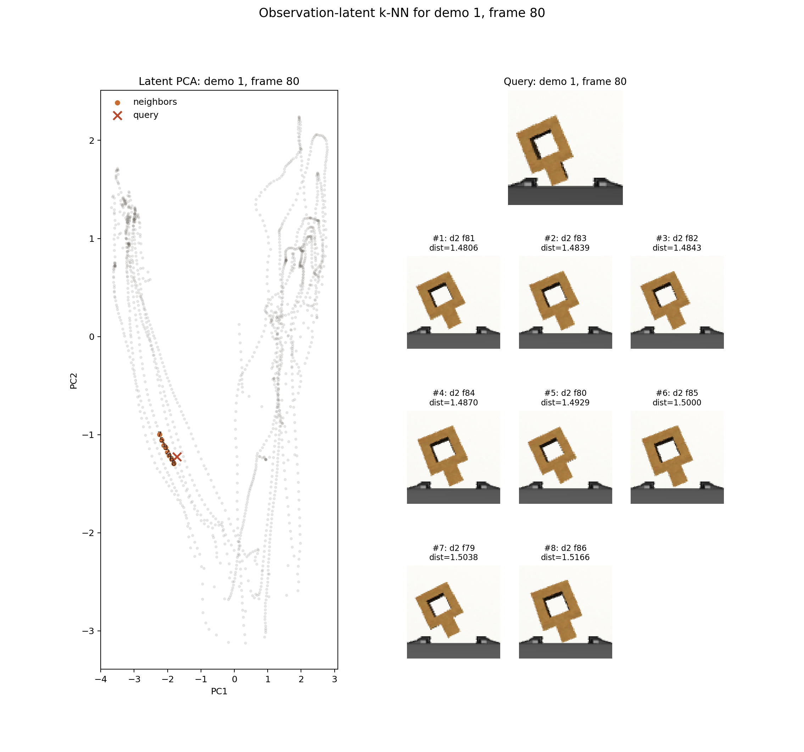
demo 3, frame 20
Query frame with its latent nearest neighbors, ordered by increasing Euclidean distance.

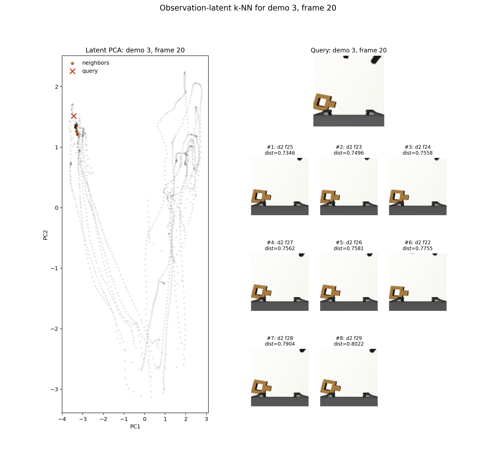
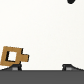
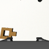
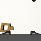
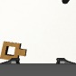
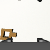
demo 3, frame 60
Query frame with its latent nearest neighbors, ordered by increasing Euclidean distance.
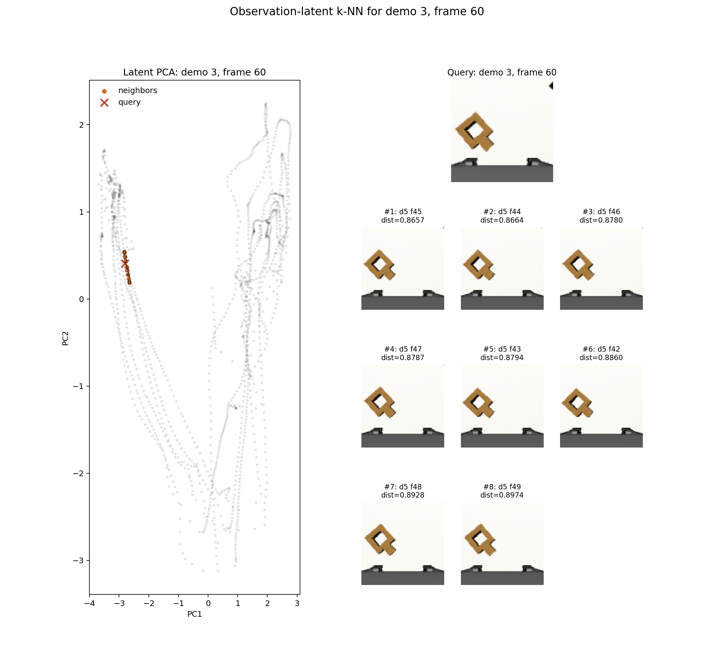